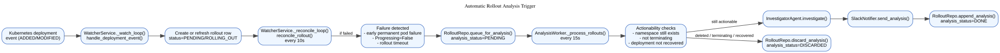
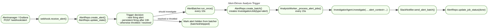
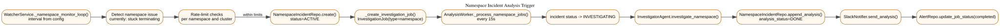
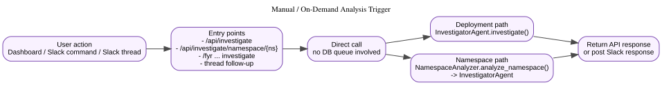

2026-03-06
This document explains how Project Fyr decides to start an analysis, which runtime component owns each trigger path, and how that work is persisted and notified.
It covers four active trigger paths:
It also records one verified bug in the current codebase: pending namespace investigation jobs were eligible for the alert-job worker and could be consumed by the wrong path.
The main runtime actors are:
WatcherService: watches deployments, reconciles rollout
state, and monitors namespaces.AnalyzerService: runs the alert batcher and the
AnalysisWorker.AnalysisWorker: consumes pending rollout, alert, and
namespace work.RolloutRepo / AlertRepo /
NamespaceIncidentRepo: persist queue state and analysis
state.InvestigatorAgent: runs the LLM-backed
investigation.SlackNotifier: emits the resulting Slack
notification.Primary source locations:
project_fyr/service.py:31project_fyr/service.py:256project_fyr/service.py:687project_fyr/service.py:716project_fyr/service.py:754project_fyr/service.py:915project_fyr/service.py:1324project_fyr/db.py:216project_fyr/db.py:563project_fyr/db.py:842The automatic rollout path is the main trigger mechanism for failed deployments.

WatcherService._watch_loop() receives Kubernetes
deployment events and calls handle_deployment_event().WatcherService._reconcile_loop() runs every 10 seconds
over active rollouts.reconcile_rollout() decides whether the rollout is
still progressing, has succeeded, or has failed.analysis_status=PENDING using
queue_for_analysis().AnalysisWorker._process_rollouts() runs every 15
seconds and fetches failed rollouts where
analysis_status == PENDING.InvestigatorAgent.investigate().analysis_status=DONE.reconcile_rollout() currently queues analysis for three
failure classes:
Progressing=False.That logic lives in:
project_fyr/service.py:1343project_fyr/service.py:1399project_fyr/service.py:1415Rollout analysis is not driven by InvestigationJob.
The actual trigger is the state transition to
rollouts.analysis_status = PENDING, and the consumer is
RolloutRepo.list_failed().
Alerts use a different trigger path from rollouts.

POST /webhook/alert.alert_states.AlertBatcher runs every 10 seconds and groups
eligible alerts inside the correlation window.AlertRepo.create_batch() creates an
alert_batches row and an
InvestigationJob(type="alert", status="pending") row.AnalysisWorker._process_alert_jobs() picks up pending
alert jobs and calls
InvestigatorAgent.investigate(..., alert_context=...).This path is job-based. The durable trigger is the creation of a
pending InvestigationJob row of type
alert.
Primary source locations:
project_fyr/webhook.py:28project_fyr/webhook.py:89project_fyr/service.py:38project_fyr/db.py:842project_fyr/service.py:472Namespace analysis is also job-based, but it starts from the namespace monitor rather than the alert webhook.

WatcherService._namespace_monitor_loop() periodically
scans namespaces.Terminating longer than the configured threshold.namespace_incidents row.InvestigationJob(type="namespace", status="pending").AnalysisWorker._process_namespace_jobs() picks up the
job.INVESTIGATING, calls
investigate_namespace(), stores the result, posts to Slack,
and marks the job completed.Primary source locations:
project_fyr/service.py:754project_fyr/service.py:797project_fyr/service.py:860project_fyr/service.py:543project_fyr/service.py:574Manual investigations bypass both rollout and job queues.

InvestigationJob rows and
does not depend on analysis_status=PENDING.Representative entry points:
project_fyr/dashboard.py:255project_fyr/dashboard.py:333project_fyr/slack_commands.py:221project_fyr/slack_handler.py:142project_fyr/slack_handler.py:423project_fyr/namespace_analyzer.py:57There are two distinct queueing models in Fyr today.
rollouts.analysis_statusqueue_for_analysis()RolloutRepo.list_failed()_process_rollouts()investigation_jobscreate_batch() or
_create_investigation_job()get_pending_alert_jobs() and
get_pending_namespace_jobs()_process_alert_jobs() and
_process_namespace_jobs()This split matters operationally. Looking only at
investigation_jobs does not tell you whether rollout
analysis is backed up.
AnalysisWorker._process_alert_jobs() originally fetched
all pending InvestigationJob rows, not only alert jobs.
That meant a pending namespace job was eligible for the alert worker.
A namespace job has no alert_batch_id. If
_process_alert_jobs() picked it first, the job could be
marked out of pending before
_process_namespace_jobs() had a chance to handle it.
In practical terms, the wrong worker could steal the work item.
The repository method used by _process_alert_jobs() did
not filter on InvestigationJob.type == "alert".
The code now uses an alert-specific selector:
project_fyr/db.py:get_pending_alert_jobs()project_fyr/service.py:_process_alert_jobs()This keeps the queue ownership aligned with the job type.
A focused regression test was added and run in the repo virtualenv:
./.venv/bin/pytest -q tests/test_service.py -k process_alert_jobs_ignores_pending_namespace_jobs./.venv/bin/pytest -q tests/test_service.py -k 'alert or namespace or loop'Result at time of writing:
When you need to know why analysis did or did not happen, inspect the system in this order.
status and analysis_status._process_rollouts() and agent
execution.alert_states.InvestigationJob(type="alert") row
exists._process_alert_jobs().namespace_incidents row.InvestigationJob(type="namespace") row
exists._process_namespace_jobs().The main automatic rollout trigger is
queue_for_analysis() setting
rollouts.analysis_status = PENDING.
Alerts and namespace incidents are different: they trigger through
typed InvestigationJob rows.
Manual investigations bypass both queues and call the agent directly.